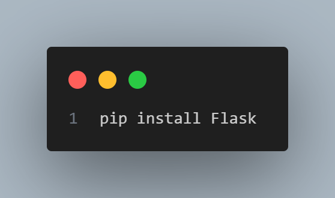
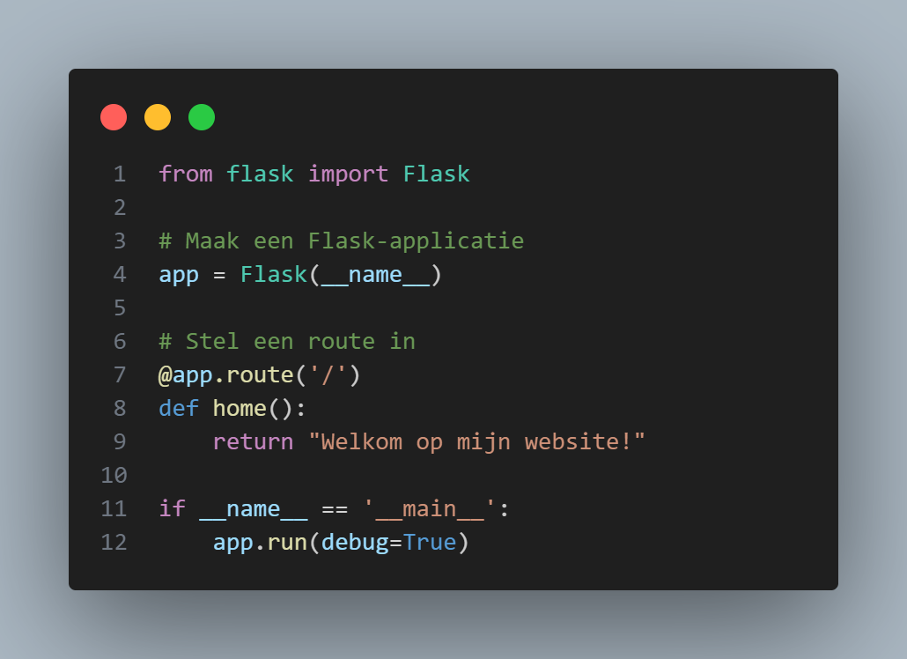

Website met Python
In deze tutorial leer je hoe je een eenvoudige website kunt maken met Python en het Flask-framework. Flask is een micro-framework dat eenvoudig te begrijpen is, zelfs voor mensen zonder coderingservaring. We doorlopen stap voor stap het proces, zodat je een werkende website kunt creëren zonder dat je veel technische kennis nodig hebt.
Wat is Flask?
Flask is een lichtgewicht webframework voor Python. Het stelt je in staat om snel en eenvoudig een webapplicatie te bouwen. Omdat het zo simpel is, is het een perfecte keuze voor beginners die willen leren hoe ze websites kunnen maken zonder diepgaande kennis van webontwikkeling.
Benodigdheden
- Python: Zorg ervoor dat je Python op je computer hebt geïnstalleerd. Je kunt het downloaden van de officiële website: python.org.
- Text editor: Een editor zoals VSCode, Sublime Text, of zelfs de ingebouwde editor van Python, IDLE, is genoeg.
- Flask: We installeren Flask voor Python via de terminal of command prompt. Je kunt dit doen door de volgende opdracht uit te voeren:

Stap 1: Maak een basis Flask project
- Maak een nieuwe map waar je je websiteproject wilt opslaan. Noem deze bijvoorbeeld
mijn_website - Maak een nieuw bestand met de naam
app.pyin de mapmijn_website. Dit bestand bevat de code voor je website. - Open app.py en schrijf de volgende code:

Wat gebeurt hier?
- We importeren eerst de Flask module voor Python.
- We maken een nieuwe Flask-applicatie aan met
Flask(__name__). Dit zorgt ervoor dat we de website kunnen gaan maken. - We stellen een route in, wat betekent dat we aangeven welke functie uitgevoerd moet worden wanneer een bepaalde URL wordt bezocht. In dit geval, wanneer de gebruiker naar de root (/) gaat, wordt de functie
home()aangeroepen en tonen we de tekst "Welkom op mijn website!". - De code
app.run(debug=True)zorgt ervoor dat de server in de ontwikkelmodus draait, zodat je wijzigingen snel kunt testen.
Stap 2: De website laten werken
- Open de terminal (of command prompt) en navigeer naar je projectmap.
Voer dan het volgende commando uit om de server te starten: